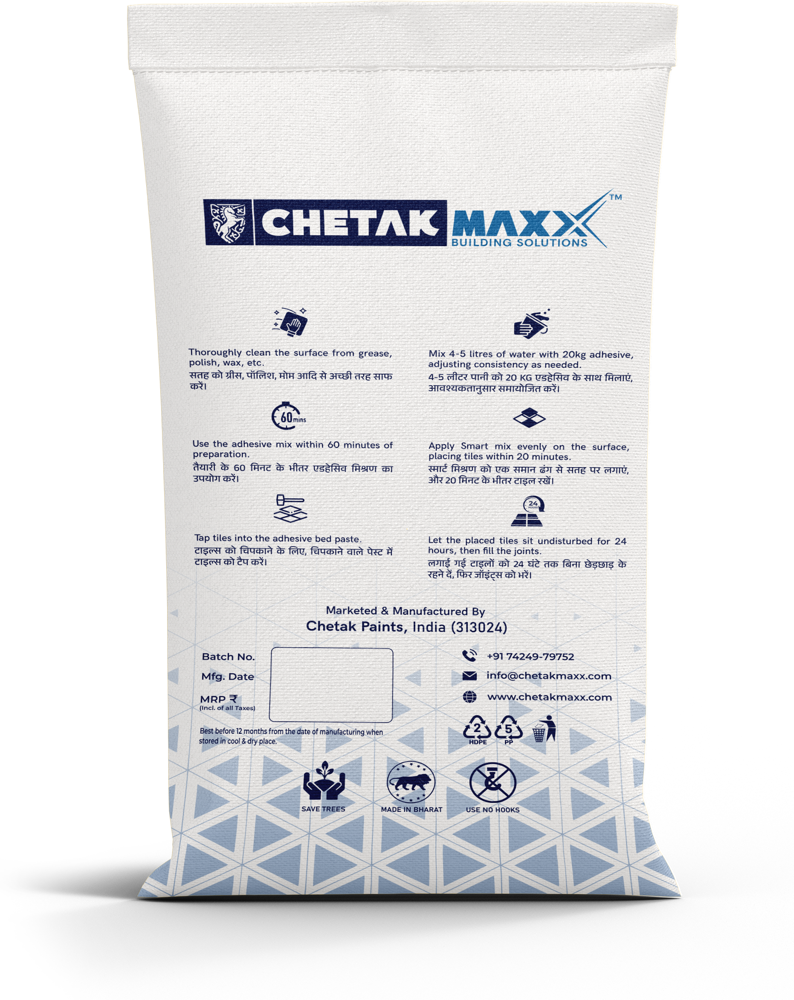

Tile Adhesive — Wall & Floor
Polymer modified grey cement adhesive for ceramic, vitrified & natural stone — IS 15477:2019 Type-2T · Net weight 20 kg.
Front

Back — application info

Technical data sheet
Chetak Maxx Wall & Floor Tile Adhesive is a polymer modified grey cement based high quality tile adhesive recommended for ceramic, vitrified tiles and all natural stones fixing on floor and wall in internal dry areas and external floor.
Conforms to IS 15477:2019 (Type-2T)
Areas of application
Ideal for thin bed floor and wall application of ceramic tiles, vitrified tiles, all natural stones and glass mosaic tiles. Suitable for horizontal and vertical application in interiors and horizontal application on exteriors. Also recommended for tile-on-tile application.
Key features & benefits
- ✓ Pre-soaking of tile not required
- ✓ Quick mixing
- ✓ Excellent adhesion with substrate
- ✓ Self curing
- ✓ Single component — just add water
- ✓ Enhanced durability
Method of application
Surface preparation
- Surface must be structurally sound. Remove oil, bond-inhibiting agents, dirt, dust and laitance. Surfaces must be plumb and true to within 6 mm in 10 ft (3 m).
- New concrete slabs shall be damp cured and at least 28 days old before application to reduce shrinkage at the fixing surface.
- Rough or uneven concrete should be levelled with screed or suitable plaster. Use a wood float for a better finish.
Mixing
- Use 4.5 L to 5 L of water per 20 kg of powder.
- Add Chetak Maxx Wall & Floor Tile Adhesive to the measured water and mix with a mechanical stirrer for 2–3 minutes until lump-free.
- Leave the mixture 2–3 minutes before use.
- Do not add extra water to alter consistency or extend pot life — this reduces adhesion strength.
Application
- Apply with the flat side of the trowel, then comb with the notched side. Use the correct notch size for full bedding.
- Minimum 3 mm bed thickness on walls and floors.
- Press tiles firmly with a slight twisting action; embed with a rubber mallet. Ensure no voids behind tiles.
- Fix tiles within 20–30 minutes of spreading adhesive. Use support on vertical surfaces; tile from bottom to top.
Technical data (IS 15477:2019)
| Appearance | Grey |
|---|---|
| Water : powder ratio | 24%–26% by weight |
| Bulk density | 1350–1550 kg/m³ |
| Open time | 30 minutes |
| Adjustment time | 25 minutes |
| Trafficable time | 24 hours |
| Pot life | 60–120 minutes |
| Coverage @ 3 mm | 60–70 sq.ft per 20 kg bag (lab conditions) |
| Adhesive thickness | 3–12 mm |
| Packaging | 20 kg |
| Shelf life | 12 months from manufacturing when stored in a dry area |
| Test property | Unit | IS 15477:2019 requirement | Chetak Maxx value |
|---|---|---|---|
| Slip resistance | mm | Shall not be more than 0.5 mm | 0.1–0.3 |
| Tensile adhesion @ 28 days (dry) | N/mm² | Min 1.0 | 1.2–1.60 |
| Tensile adhesion @ 28 days (wet) | N/mm² | Min 1.0 | 1.1–1.6 |
| Shear adhesion @ 28 days (dry) | N/mm² | Min 1.25 | 1.35–1.65 |
| Shear adhesion @ 28 days (wet) | N/mm² | Min 1.0 | 1.15–1.40 |
| Shear adhesion @ heat ageing, 28 days | N/mm² | Min 1.0 | 1.1–1.40 |
Technical data is based on laboratory testing and may vary with site application, temperature, humidity and substrate absorption.
Precautions & notes
- Do not add excess water beyond the recommended ratio.
- Never add sand or cement at site.
- Not suitable over flexible substrates (fibre cement sheeting, plasterboard, timber).
- Do not use on timber, plywood, glass, metals, plastic or polyurethane membranes.
- Avoid application in direct sunlight.
- Allow minimum 24 hours before use of tiled areas. Surface temperature 5°C–40°C; below 20°C allow extended cure time.
Safety
Chetak Maxx Wall & Floor Tile Adhesive is non-toxic. Wear suitable protective clothing, gloves and eye/face protection. Wash skin or eye splashes with clean water immediately and seek medical advice if required.
An ISO 9001:2015 certified company · Net weight 20 kg